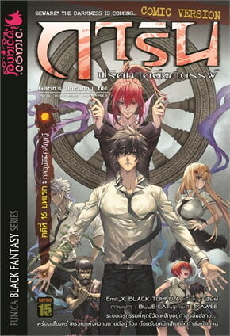

Home
Thriller
Suspense

การิน ปริศนาคดีอาถรรพ์ คดีที่ 16 (Mg) กลอุบัติมิคสัญญี (บทแรก)
ผู้เขียน:
อัยย์
สำนักพิมพ์:
Punica comic
หมวดหมู่:
นิยาย , นิยายสืบสวนสอบสวน นิยายลี้ลับ
รายละเอียด:
มิตรภาพระหว่าง “การิน” “ลัลทริมา” และ “รุทร” ได้ถูกศาสดาผมแดงอย่าง “เชียร” ท้าทายด้วยบทพิสูจน์แห่งความไว้ใจ เหตุการณ์เหมือนจะดำเนินไปสู่ความเลวร้าย เมื่อลัลทริมา มัณฑินี และเอมิกาพบว่าลานสักการะสิ่งศักดิ์สิทธิ์ได้แปรเปลี่ยนเป็นสถานที่อันเต็มไปด้วยฝูงชนผู้คลุ้มคลั่งด้วยความมัวเมาในกิเลส ในขณะที่การินได้ค้นพบเบาะแสของเหตุโกลาหลทั้งหมด…
รีวิว: เปิดเรื่องด้วยบรรยากาศที่เข้มข้นและลึกลับตั้งแต่บทแรก โดยตัวละครการินยังคงรักษาเอกลักษณ์ที่แฟน ๆ รู้จักกันดี มีการพัฒนาอารมณ์และแรงจูงใจที่ทำให้ผู้อ่านรู้สึกเชื่อมโยง และการวางปริศนาก็มีความท้าทาย ทำให้ต้องใช้ความคิดในการคาดเดาและร่วมสนุกกับการสืบสวน